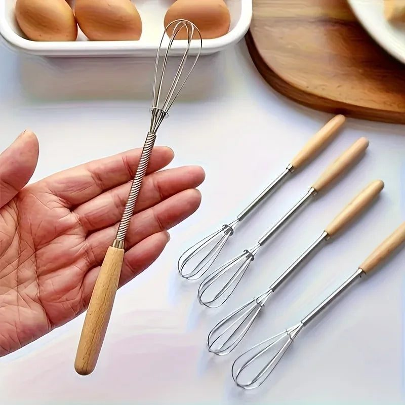
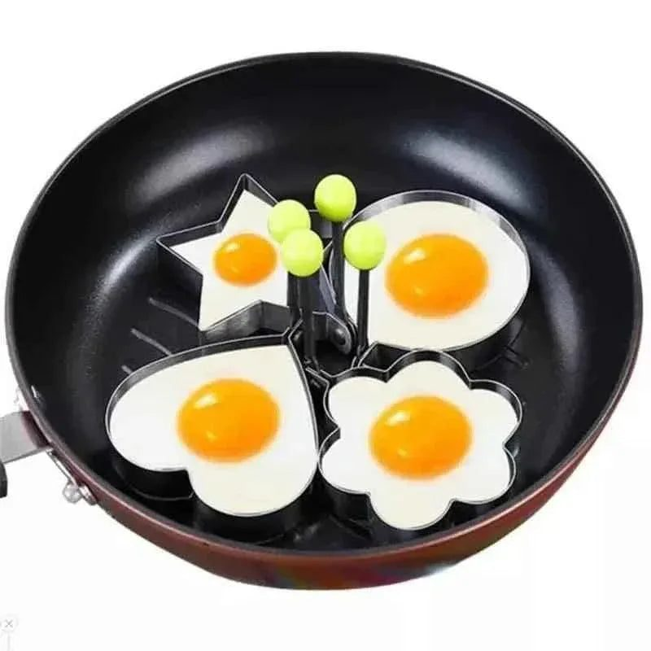

Sehri is the quietest and most rushed meal of the year. Alarms ring at three or half past three in the morning, someone stumbles into the kitchen half asleep, and there are maybe thirty or forty minutes to cook, eat and drink enough water before the Fajr azan. In joint families, the cook may be making parathas for eight people. In a flat, a student or working couple just wants something filling without too much effort.
The secret to an easy sehri is preparation and a few small tools that make each step faster. This guide shares both.
Prep the night before
After iftar and taraweeh, spend ten minutes setting up for sehri. Knead paratha dough and keep it covered in the fridge. Chop onions, tomatoes and green chillies for the omelette and store them in an airtight box. Fill the water bottles and place them in the fridge. Set out the tawa, the plates and the tea pan. In the morning, everything is ready and you just start cooking.

Eggs, the sehri hero
Eggs are cheap, high in protein and keep you full for hours. They cook in minutes too. A few small tools make egg dishes even faster and neater:
- An egg shell opener cracks eggs cleanly without shell pieces falling into the pan
- A sturdy whisk beats eggs and milk smoothly for fluffy omelettes
- Egg rings or moulds shape fried eggs perfectly, which children love
- A non-stick pan reduces oil and makes cleaning quicker
These are inexpensive, and they turn a sleepy, messy task into a simple routine. You can find many such helpers among these handy kitchen tools, which are worth stocking before Ramadan begins.
Parathas without the stress
Fresh parathas are many families' favourite, but they take time. Make dough the night before and pre-roll a stack of parathas, separating them with plastic sheets or butter paper in the fridge. In the morning, they go straight onto the hot tawa. Some families half-cook a batch in advance and finish them on the tawa at sehri. Use less ghee than usual to avoid feeling heavy and thirsty during the day.
Hydration matters most
In summer Ramadan, especially in hot cities like Karachi, Multan and Sukkur, fasts are long and dehydration is the biggest problem. Drink water steadily between iftar and sehri rather than gulping a litre at the last minute. At sehri, include water-rich foods such as yoghurt, cucumber and fruit. Limit salty and very spicy food, and keep tea to a single cup, since caffeine makes you lose water.

A tidy kitchen at the end
Nobody wants to wash dishes after sehri, but leaving them until after a long fast is worse. Soak the tawa and pans in warm soapy water while eating, then rinse quickly. Wipe the counter. Put leftovers in the fridge immediately. Five minutes of cleaning means a fresh kitchen to start iftar preparation later.
Involve the family
Sehri is easier when it is shared. Assign simple jobs: one person sets the table, another makes tea, another fills water glasses. Children who are old enough to fast can help with eggs or toast. Sharing the work also makes sehri feel like a family moment rather than a chore.
Final thoughts
A calm sehri sets the tone for the whole fast. Plan the week, prep at night, rely on eggs and a few smart tools, and focus on water. With a little organisation, those sleepy pre-dawn minutes become one of the most peaceful parts of Ramadan.